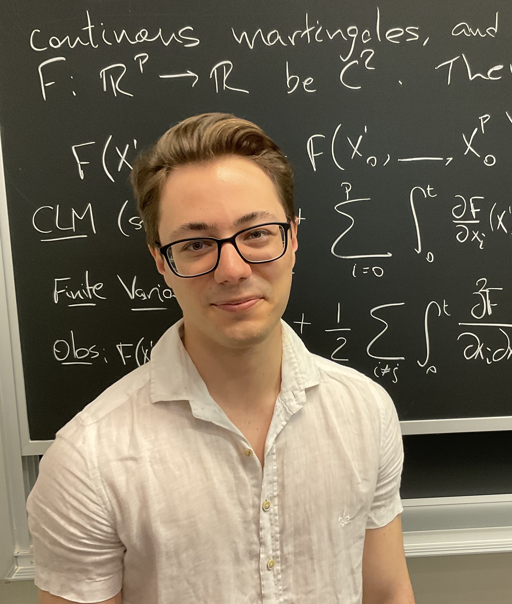

I am originally from Campinas, Brazil, and have lived in Salamanca, Toronto, and Chicago. I graduated from the University of Toronto with an Honors B.Sc. (summa cum laude) in Mathematics and Physics in 2024, and an M.Sc. in Mathematics in 2025 under the supervision of Kirill Serkh.
In the Fall of 2025, I started a Ph.D. in Computational and Applied Mathematics in the Committee on Computational and Applied Mathematics at the University of Chicago. I am honored to be the recipient of a McCormick Fellowship (2025).
